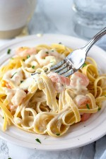

Beef fried rice is my favorite dish because it is my comfort food. I am asian so we go to a lot of different asian restaurants and sometimes I don't know what to get. However, I know that I am able to get fried rice and even if there are different recipes, I know that I will like the food.
She likes it because its easy to make and it has always tasted good for her.
He likes it because it tastes good to him
| Dish | Ingredients | Amount |
| Beef Fried Rice | White Rice | 1 Cup |
| Beef Fried Rice | Eggs | 2 |
| Beef Fried Rice | Carrot,onions,green onions, and peas | 1 bag of mix veggies |
| Beef Fried Rice | Garlic | 1 whole garlic |
| Beef Fried Rice | Beef | 1 cut |
| Beef Fried Rice | Butter | 1 stick |
| Shrimp Alfredo | Shrimp | 30-40 |
| Shrimp Alfredo | Fettuccine Pasta | 1 box |
| Shrimp Alfredo | Unsalted Butter | 1 stick |
| Shrimp Alfredo | Cream Cheese | 1 box |
| Heavy Cream | Chicken Broth | 16 oz |
| Shrimp Alfredo | Heavy Cream | 16 oz |
| Shrimp Alfredo | Garlic | 1 whole garlic |
| Shrimp Alfredo | Parmesan | Up to cook |
| Cheese Pizza | Pizza Dough | 1 |
| Cheese Pizza | Pizza Sauce | 1/3 cup |
| Cheese Pizza | Shredded mozzarella cheese | 1 cup |
| Cheese Pizza | Grated parmesan cheese | 1/4 cup |